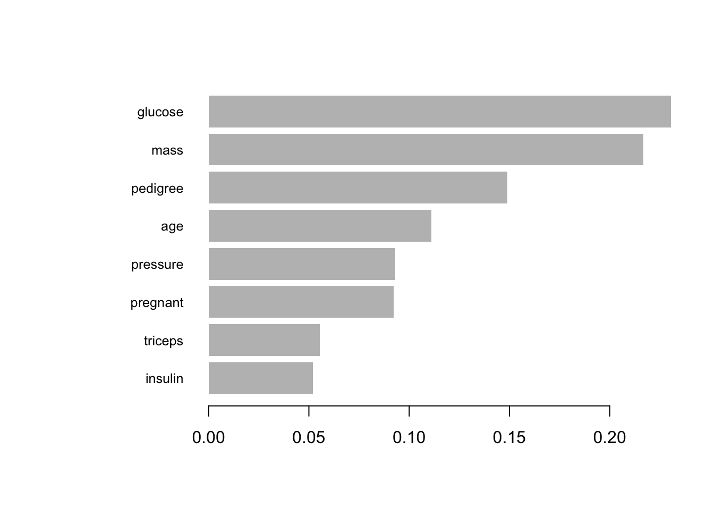
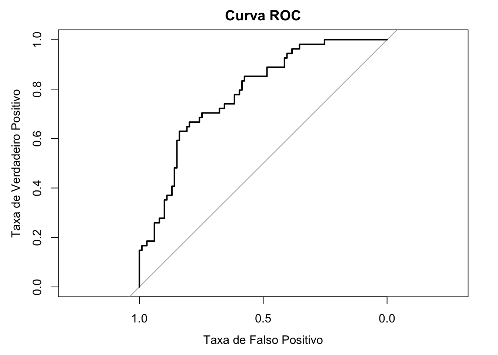
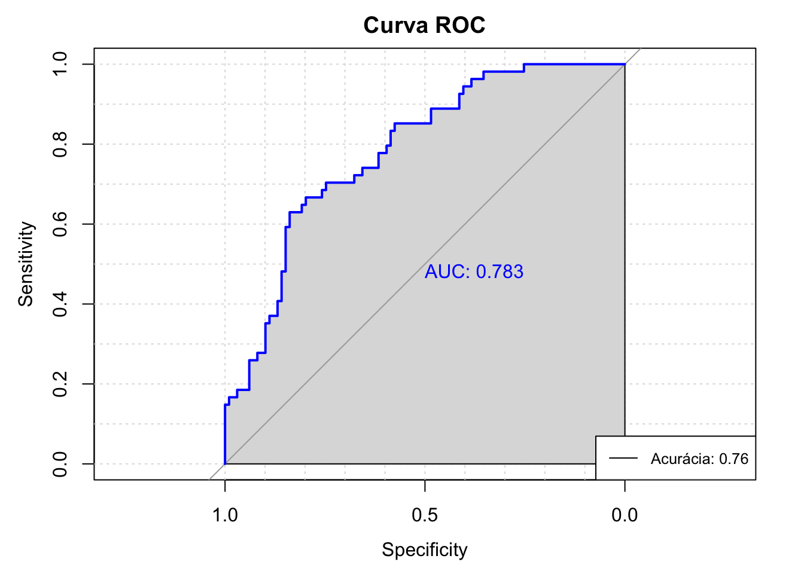
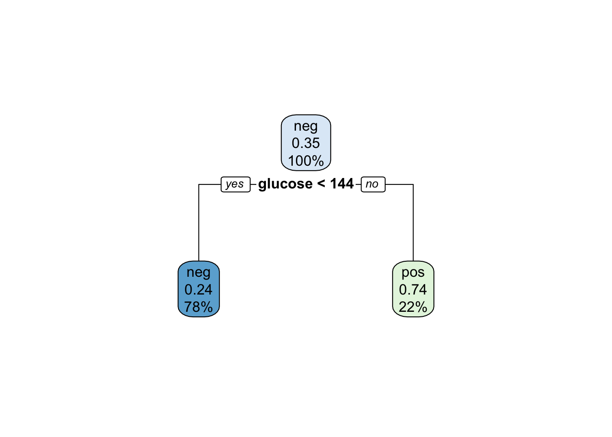
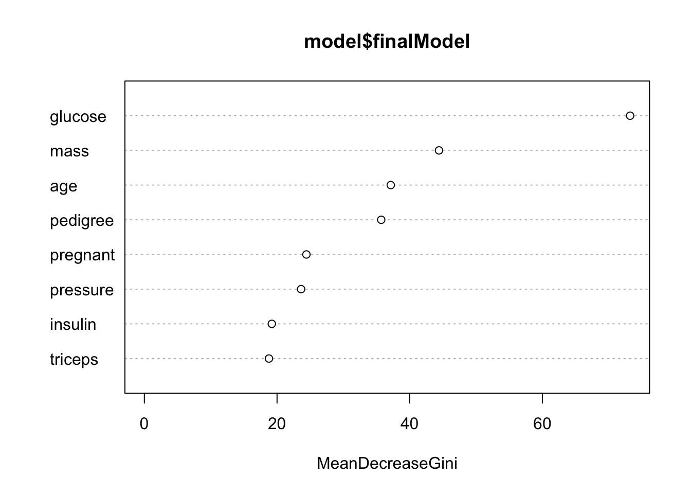
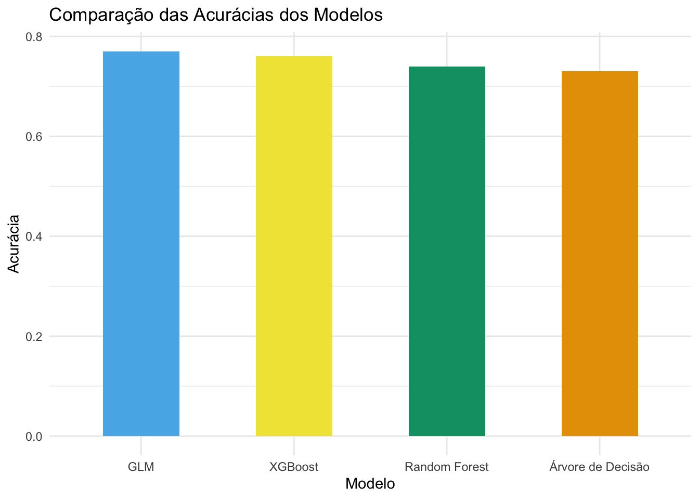

## Carrega bibliotecas necessárias
pacman::p_load(xgboost, caret, mlbench)
## xgboost = treinamento do modelo XGBoost
## caret = preparação de dados e avaliação do modelo
## mlbench = carregar o conjunto de dados PimaIndiansDiabetesAula68_Pratica_XGBoost_detalhada
Aprimorando com outras bibliotecas
Pré-processamento dos dados:
Certifique-se de que seus dados estão em um formato que o XGBoost pode usar. O XGBoost aceita dados numéricos, então certifique-se de converter variáveis categóricas em variáveis dummy ou codificá-las de alguma forma.
## Carrega conjunto de dados PimaIndiansDiabetes
data("PimaIndiansDiabetes")
## Cria uma nova coluna 'diabetes_bin' com base na coluna 'diabetes'
PimaIndiansDiabetes$diabetes_bin <- ifelse(PimaIndiansDiabetes$diabetes == "pos", 1, 0)
## Remove a coluna 'diabetes'
PimaIndiansDiabetes$diabetes <- NULL
## Garante que todos os dados são numéricos
PimaIndiansDiabetes[] <- lapply(PimaIndiansDiabetes, as.numeric)O pré-processamento dos dados é feito assegurando que todos os dados sejam numéricos antes de serem passados para o XGBoost. Isso é feito com o código PimaIndiansDiabetes[] <- lapply(PimaIndiansDiabetes, as.numeric).
Configuração de parâmetros:
Treinamento `Train` & Teste `Test`
A verificação de overfitting é implícita, uma vez que um conjunto de dados de teste é separado do conjunto de dados de treinamento. As previsões são então feitas no conjunto de dados de teste e a acurácia é calculada.
## Dividindo o conjunto de dados em treinamento e teste
set.seed(42) ## Para resultados reproduzíveis
trainIndex <- createDataPartition(PimaIndiansDiabetes$diabetes_bin, p=0.8, list=FALSE)
trainData <- PimaIndiansDiabetes[trainIndex,]
testData <- PimaIndiansDiabetes[-trainIndex,]A configuração de parâmetros é feita na lista de parâmetros que é passada para a função xgb.train().
## Converte os dados de treinamento e teste para matrizes, que é o formato de entrada exigido pelo XGBoost
trainMatrix <- xgb.DMatrix(data = as.matrix(trainData[,-9]), label = trainData$diabetes_bin)
testMatrix <- xgb.DMatrix(data = as.matrix(testData[,-9]), label = testData$diabetes_bin)- XGBoost tem muitos parâmetros que podem ser ajustados para melhorar o desempenho do modelo. Fazer experiências com diferentes combinações de parâmetros pode levar a resultados significativamente melhores.
## Parâmetros para o modelo XGBoost
params <- list(
objective = "binary:logistic",
eval_metric = "auc",
max_depth = 5,
eta = 0.3,
colsample_bytree = 0.7,
min_child_weight = 1,
subsample = 0.8
)Olhando no detalhe:
objective: Define a função de perda a ser otimizada durante o treinamento do modelo. Neste caso, “binary:logistic” indica que estamos resolvendo um problema de classificação binária usando a função logística.
eval_metric: Define a métrica de avaliação a ser usada durante o treinamento do modelo. Neste caso, “auc” indica que estamos usando a área sob a curva ROC como métrica de avaliação.max_depth: Define a profundidade máxima das árvores de decisão no modelo. Controla a complexidade do modelo, evitando o overfitting. Um valor maior indica árvores mais profundas.eta: Também conhecido como taxa de aprendizado, controla a taxa de atualização dos pesos do modelo a cada iteração. Um valor menor requer mais iterações para atingir a convergência, mas pode melhorar a generalização.colsample_bytree: Controla a proporção de colunas (features) a serem amostradas aleatoriamente para construir cada árvore. Um valor menor reduz a correlação entre as árvores e pode ajudar a evitar o overfitting.min_child_weight: Define o peso mínimo necessário para criar um novo nó na árvore. Um valor maior impõe mais restrições às partições de nós e pode ajudar a evitar o overfitting.subsample: Controla a proporção de amostras (linhas) a serem amostradas aleatoriamente para construir cada árvore. Um valor menor reduz a correlação entre as árvores e pode ajudar a evitar o overfitting.
Treinando o modelo
O XGBoost lida automaticamente com valores faltantes, portanto, não há necessidade de qualquer código extra para lidar com isso neste exemplo.
## Treinando o modelo XGBoost
model <- xgb.train(params = params, data = trainMatrix, nrounds = 100)## Fazendo previsões no conjunto de teste
predictions <- predict(model, testMatrix)
## Convertendo as probabilidades preditas em classes binárias
predictedClasses <- ifelse(predictions > 0.5, 1, 0)
## Avaliando a acurácia do modelo
accuracy <- sum(predictedClasses == testData$diabetes_bin) / nrow(testData)
print(paste("Acurácia para XGBoost: ", round(accuracy, 2)))[1] "Acurácia para XGBoost: 0.76"Finalmente, a visualização do modelo é feita através do gráfico de importância das variáveis, que é gerado com a função xgb.plot.importance().
## Criando o gráfico de importância da variável
importance_matrix <- xgb.importance(model = model)
xgb.plot.importance(importance_matrix)
A função xgb.plot.importance() identifica qual a importância de uma variável medida pela quantidade de vezes que essa variável é usada para dividir os dados em todas as árvores. Em outras palavras, é uma medida de quão informativa é uma variável para prever o resultado.
Aqui estão as principais características do gráfico de importância de variáveis:
Eixo Y: Este eixo lista todas as variáveis do modelo.
Eixo X: Este eixo representa a importância relativa de cada variável. Uma variável com maior importância relativa é usada mais frequentemente para dividir os dados. Portanto, essa variável tem uma maior contribuição para a formação da previsão.
Barra: Cada variável é representada por uma barra e o comprimento da barra indica a importância relativa da variável correspondente.
Curva ROC
## Carregar a biblioteca pROC
pacman::p_load(pROC)
## Calcular as probabilidades preditas pelo modelo
predictedProb <- predict(model, testMatrix)
## Criar um objeto roc com as probabilidades e os valores reais
roc_obj <- roc(testData$diabetes_bin, predictedProb)Setting levels: control = 0, case = 1Setting direction: controls < cases## Plotar a curva ROC
plot(roc_obj, main = "Curva ROC", xlab = "Taxa de Falso Positivo", ylab = "Taxa de Verdadeiro Positivo")
## Calcular a área sob a curva (AUC)
auc <- auc(roc_obj)
print(paste("Área sob a curva (AUC):", round(auc, 2)))[1] "Área sob a curva (AUC): 0.78"No gráfico da curva ROC, o eixo x representa a taxa de falso positivo (1 - especificidade) e o eixo y representa a taxa de verdadeiro positivo (sensibilidade). Quanto mais próximo o gráfico estiver do canto superior esquerdo, melhor será o desempenho do modelo.
A área sob a curva (AUC) é uma métrica de desempenho do modelo. Quanto maior o valor da AUC, melhor será a capacidade do modelo em distinguir entre as classes positiva e negativa. Uma AUC de 1 indica um modelo perfeito, enquanto um valor de 0,5 indica um modelo aleatório.
## Carregar as bibliotecas necessárias
pacman::p_load(pROC)
## Calcular as probabilidades preditas pelo modelo
predictedProb <- predict(model, testMatrix)
## Criar um objeto roc com as probabilidades e os valores reais
roc_obj <- roc(testData$diabetes_bin, predictedProb)Setting levels: control = 0, case = 1Setting direction: controls < cases## Calcular a acurácia do modelo
accuracy <- sum(predictedClasses == testData$diabetes_bin) / nrow(testData)
## Plotar a curva ROC usando pROC
roc_plot <- plot(roc_obj, main = "Curva ROC", col = "blue", print.auc = TRUE, auc.polygon = TRUE, grid = TRUE)
## Adicionar legenda com acurácia
legend("bottomright", legend = paste("Acurácia:", round(accuracy, 2)), col = "black", lty = 1, cex = 0.8)
Curva ROC mostra a relação entre a sensibilidade e a especificidade em diferentes pontos de corte, enquanto a AUC é um valor resumido que representa a capacidade geral do modelo em discriminar corretamente entre as classes. Ambas as métricas são úteis para avaliar e comparar modelos de classificação binária.
Diversas opções para aprendizado de máquina
Como de praxe o R oferece diversos pacotes para executar funções de diferentes formas. Pacotes que recomendo para aprendizado de máquina em R:
Caret
H2O
ml3
CARET (Classification And REgression Training)
Com pacotes para aprendizado de máquina temos diversos algoritmos em uma mesma biblioteca, por exemplo, `glm`, `arvores de decisão`, `florestas aleatórias` (random forest) e o xgboost`. Tudo dentro de uma mesma biblioteca, além de funções para dividir entre treino e teste, reamostrar e selecionar dados.
Aqui demonstramos o script explicado acima modificado para gerar um novo método de algoritmo e outros resultados.
Árvore de decisão
## Carregar bibliotecas
pacman::p_load(caret, rpart, rpart.plot)
## Carregar o dataset
data("PimaIndiansDiabetes")
## Dividir o conjunto de dados em treinamento e teste
set.seed(42) ## Para resultados reproduzíveis
trainIndex <- createDataPartition(PimaIndiansDiabetes$diabetes, p = 0.8, list = FALSE)
trainData <- PimaIndiansDiabetes[trainIndex, ]
testData <- PimaIndiansDiabetes[-trainIndex, ]
## Treinar o modelo de árvore de decisão
model <- train(diabetes ~ ., data = trainData, method = "rpart")
## Fazer previsões
predictions <- predict(model, newdata = testData)
## Avaliar a precisão do modelo
accuracy <- sum(predictions == testData$diabetes) / length(predictions)
print(paste("Acurácia para árvore de decisão", accuracy))[1] "Acurácia para árvore de decisão 0.725490196078431"## Plotar a árvore de decisão
rpart.plot(model$finalModel)
Random Forest
## Carregar bibliotecas
pacman::p_load(caret, randomForest)
## Carregar o dataset
data("PimaIndiansDiabetes")
## Dividir o conjunto de dados em treinamento e teste
set.seed(42) ## Para resultados reproduzíveis
trainIndex <- createDataPartition(PimaIndiansDiabetes$diabetes, p = 0.8, list = FALSE)
trainData <- PimaIndiansDiabetes[trainIndex, ]
testData <- PimaIndiansDiabetes[-trainIndex, ]
## Treinar o modelo Random Forest
model <- train(diabetes ~ ., data = trainData, method = "rf")
## Fazer previsões
predictions <- predict(model, newdata = testData)
## Avaliar a precisão do modelo
accuracy <- sum(predictions == testData$diabetes) / length(predictions)
print(paste("Acurácia para florestas aleatórias", accuracy))[1] "Acurácia para florestas aleatórias 0.738562091503268"## Plotar a importância das variáveis
varImpPlot(model$finalModel)
GLM
## Carregar bibliotecas
pacman::p_load(caret)
## Carregar o dataset
data("PimaIndiansDiabetes")
## Dividir o conjunto de dados em treinamento e teste
set.seed(42) ## Para resultados reproduzíveis
trainIndex <- createDataPartition(PimaIndiansDiabetes$diabetes, p = 0.8, list = FALSE)
trainData <- PimaIndiansDiabetes[trainIndex, ]
testData <- PimaIndiansDiabetes[-trainIndex, ]
## Treinar o modelo GLM
model <- train(diabetes ~ ., data = trainData, method = "glm")
## Fazer previsões
predictions <- predict(model, newdata = testData)
## Avaliar a precisão do modelo
accuracy <- sum(predictions == testData$diabetes) / length(predictions)
print(paste("Acurácia para GLM:", accuracy))[1] "Acurácia para GLM: 0.77124183006536"Comparando
## Carregar bibliotecas
pacman::p_load(ggplot2)
## Criar o data frame com os resultados
resultados <- data.frame(Modelo = c("XGBoost", "Árvore de Decisão", "Random Forest", "GLM"),
Acuracia = c(0.76, 0.73, 0.74, 0.77))
## Ordenar o data frame pela coluna Acuracia em ordem decrescente
resultados <- resultados[order(-resultados$Acuracia), ]
## Definir a paleta de cores Okabe
cores <- c("#E69F00", "#56B4E9", "#009E73", "#F0E442")
## Gerar o gráfico de barras
# dados
ggplot(data = resultados, aes(x = reorder(Modelo, -Acuracia), y = Acuracia, fill = Modelo)) +
# geometri
geom_bar(stat = "identity", width = 0.5) +
# formatações
scale_fill_manual(values = cores) +
labs(title = "Comparação das Acurácias dos Modelos",
x = "Modelo", y = "Acurácia") +
theme_minimal() +
theme(legend.position = "none")
Ref
Os 20 melhores pacotes de aprendizado de máquina R para conferir agora